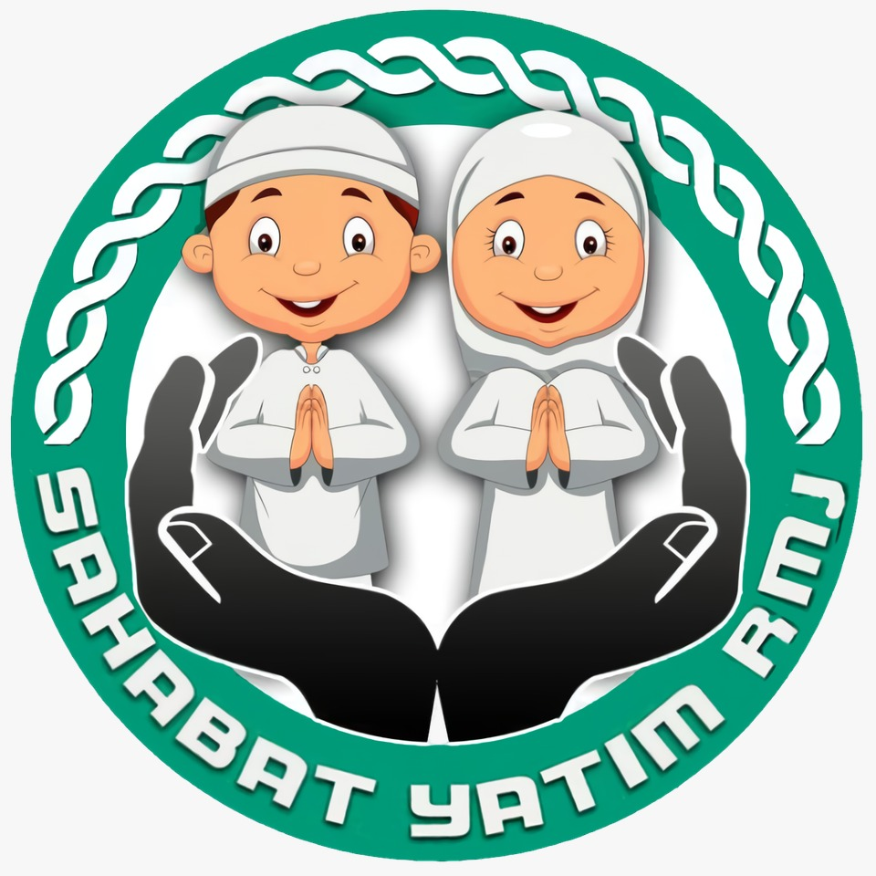
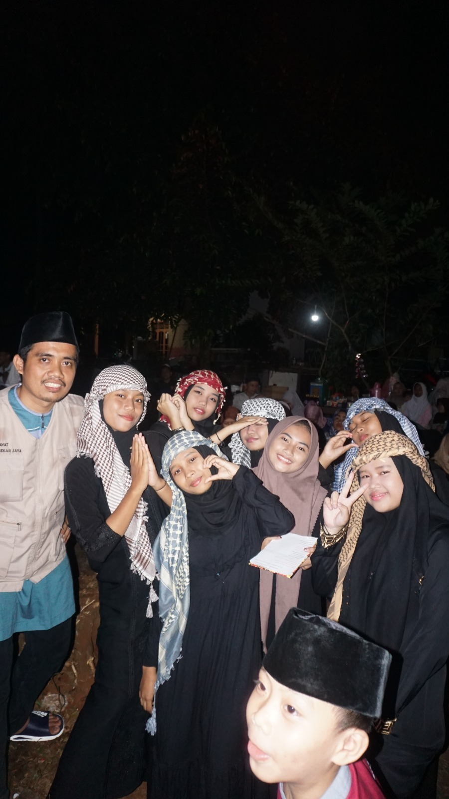
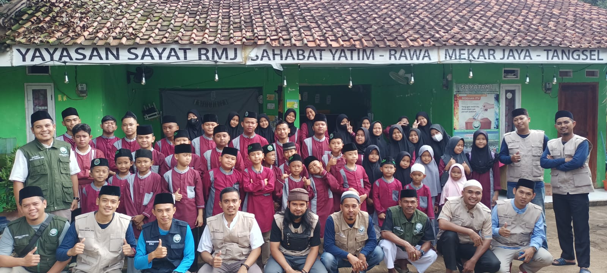
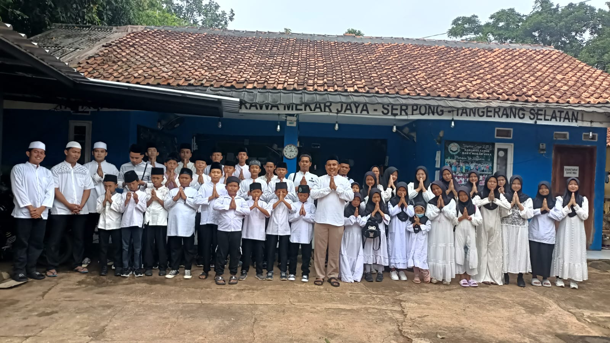
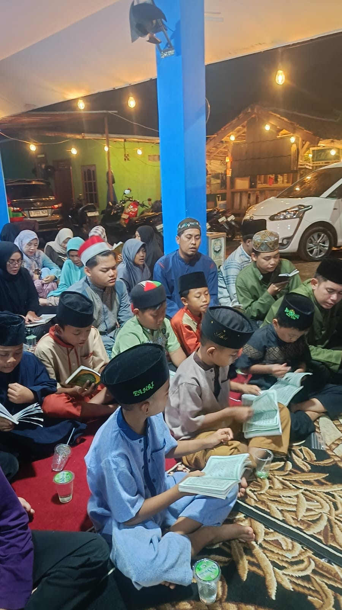
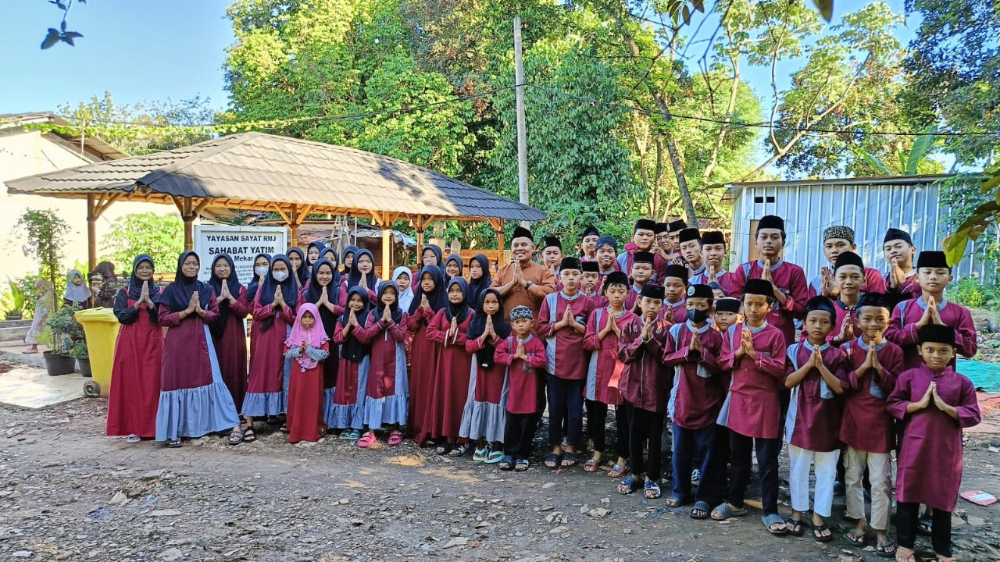
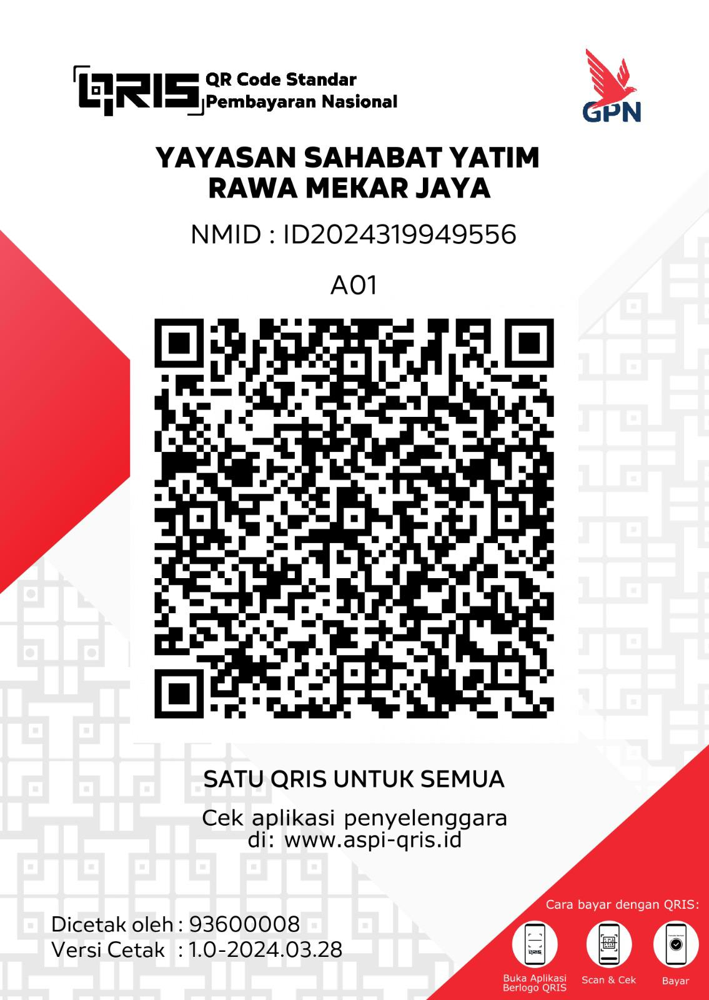

RAWA MEKAR JAYA, TANGERANG SELATAN
Yayasan Sahabat Yatim adalah lembaga sosial yang berdedikasi penuh dalam upaya pengasuhan, pemberdayaan, dan perlindungan anak-anak yatim serta dhuafa. Kami hadir sebagai jembatan kebaikan bagi para dermawan untuk memberikan masa depan yang lebih layak bagi mereka yang membutuhkan.
Sebagai bentuk komitmen kami terhadap kepatuhan hukum dan transparansi, Yayasan Sahabat Yatim telah resmi berbadan hukum dan terdaftar melalui Keputusan Menteri Hukum Dan Hak Asasi Manusia Republik Indonesia Nomor: AHU-0028644.AH.01.04.TAHUN 2021. Dengan legalitas yang jelas, Kami memastikan bahwa setiap amanah yang dititipkan akan dikelola secara profesional, akuntabel, dan sesuai dengan regulasi yang berlaku di REPUBLIK INDONESIA.
Beasiswa penuh untuk anak yatim berprestasi hingga jenjang kuliah.
Layanan pemeriksaan kesehatan rutin untuk anak asuh dan masyarakat dhuafa.
Menyediakan tempat tinggal yang layak dengan bimbingan akhlak dan ibadah.





Mari berinvestasi akhirat dengan berwakaf untuk pembangunan asrama yatim dhuafa. Setiap bata yang Anda wakafkan menjadi saksi pahala jariyah.
Bersihkan harta Anda dengan menunaikan zakat maal.
A.N. Yayasan Sahabat Yatim
A.N. Yayasan Sahabat Yatim
